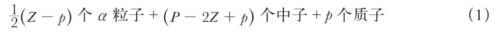
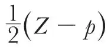
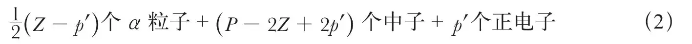
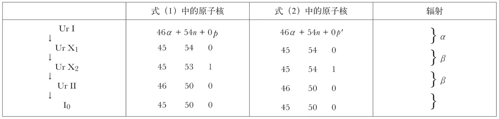

英文
英文乔治·托德
编者按
沃尔特·埃尔萨瑟最近指出质子可能是中子和正电子的合成物，而且这一假说很可能有助于解释原子核为什么带正电。在这篇文章中，乔治·托德反驳了这一观点，并提出了另外一个观点。不过托德指出：有一种特殊的铀嬗变也许可以用埃尔萨瑟的理论来解释，如果在这个过程中会凭空自发产生一个电子和正电子——现在我们知道这样的反应是存在的，虽然当时还不知道。由托德提出的核结构理论可以推出同位素之间的差别仅仅是原子核中的中子数不相同，这是托德的又一个真知灼见。 英文
在5月27日的《自然》杂志上，埃尔萨瑟博士提出证据证明质子是由一个中子和一个正电子组成的。我从不同的角度出发用以下证据来反驳这一观点。 英文
如果我们承认原子核有可能是由α粒子、质子、中子、电子和正电子组成的，那么对于一个原子质量为P、原子序数为Z的原子来说，它可能具有的结构个数将随着P和Z的增加急剧上升，而重原子可能具有的结构或许会达到数百种。如果我们排除原子核中存在独立正、负电子的可能性，那么就可以认为核结构只能有以下一种形式：

式中p取0或1，看哪一个值可以使

为整数。 英文
如果只排除独立负电子，而允许独立正电子存在，也可以得到唯一的结构。此时原子核结构为：

和前面一样，p'取0或1。事实上这就是埃尔萨瑟所支持的观点。 英文
利用这些表达式，我们可以探索放射性元素的原子核在α和β射线衰变过程中发生的变化。下表中给出了一系列典型的衰变：

关于产生α射线的转变的解释是显而易见的。而产生β射线的转变在放射系中一般成对出现，上表中出现的那对表现出与所有其他β射线转变对相同的变化。如果原子核的构成可以表示为式（1），那么发生转变的合理方式应该是这样的：
1n→1p + 1β，质子留在原子核中；3n + 1p→1α + 1β，α粒子留在原子核中。
另一方面，如果原子核的构成可以表示为式（2），那么发生的转变则是：
0→1p' + 1β，一个正电子出现在原子核中；4n + 1p'→1α + 1β，α粒子留在原子核中。
然而，在第一种转变中，电子和正电子从何而来？在第二个转变中，又如何解释电荷变化？ 英文
有趣的是，我们注意到式（1）和式（2）给出了同位素质量的下限。由式（1）推出的最小值为P ≥ 2Z － p而由式（2）推出的最小值为P ≥ 2Z － 2p'。我们还发现，同位素之间的区别仅仅在于其原子核中的中子数不相同。 英文
（王静 翻译；李军刚 审稿）